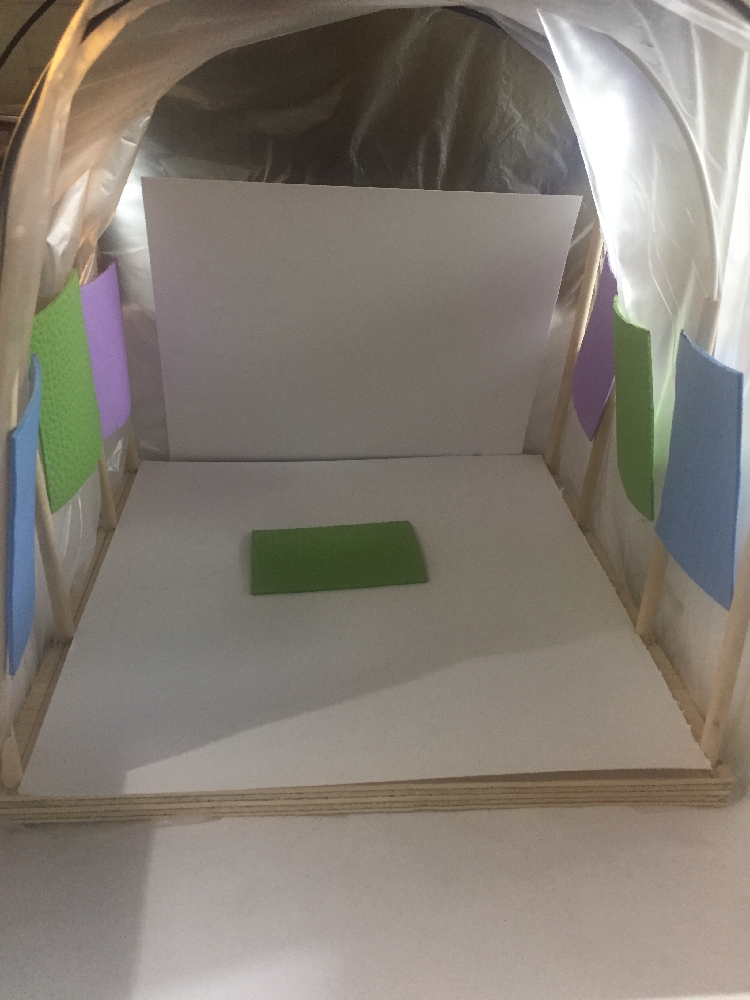
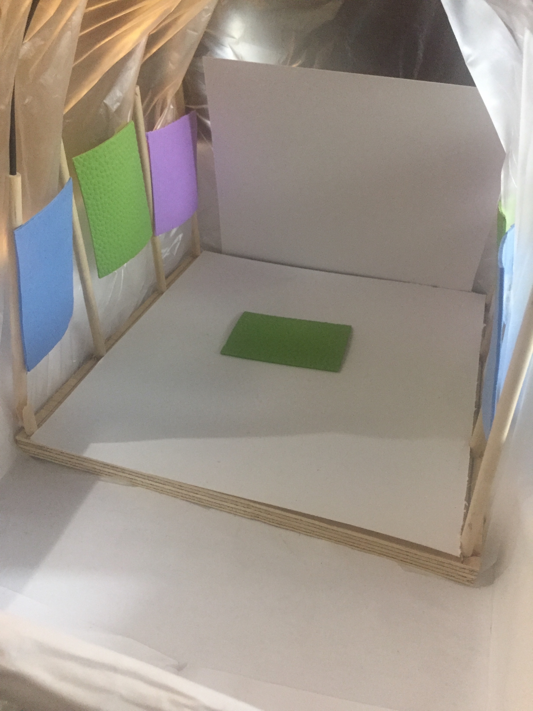

A video that explains how social media is used to spread awareness in Immigration and how social media has become an important platform to spread news in general.
Global Warming and its Effects
This project is about Global Warming. I introduced the basic meaning of what it is and incorporated a brief history of how it began and its effects on our planet Earth. My main focus was to keep it very informative and impactful to the viewers. Most people are aware or have heard of GW but don't really know how it started or for how long it has advanced. As I did my research, I realized that putting the audience or viewers in the actual environment of what a Greenhouse feels like, it would give a better perspective of its context. Also, I provided some drawings go how I visualize it in a more detailed scale and precision.


Because my installation is based on a Greenhouse, I provided a model to show how it would look if installed in a gallery. Items I used for the model are wood, foam and plastic. The video itself is projected from the top ceiling of the greenhouse. Additionally, I provided images on the walls of the room surrounding the greenhouse to show even further the effects of global warming. In the center floor, I picture a small area where there can be some kind of vegetation and alongside the walls there is space for soil/grass. I included these to enhance the feeling of a true greenhouse.